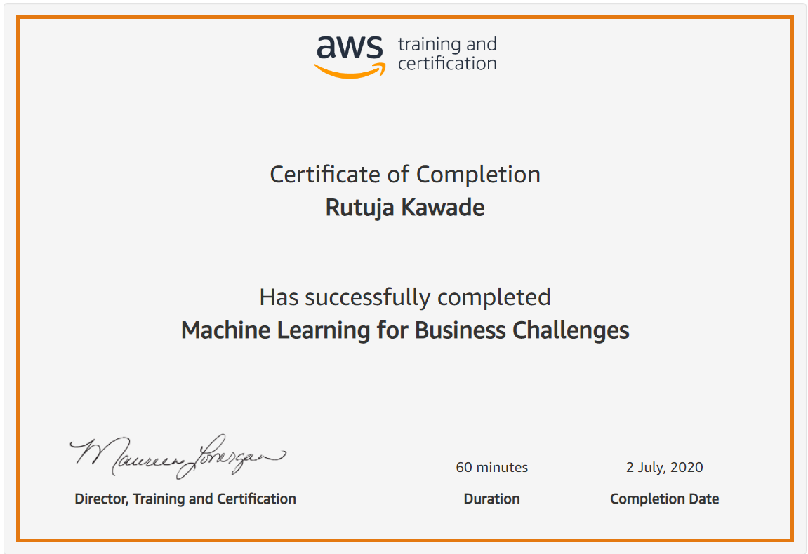
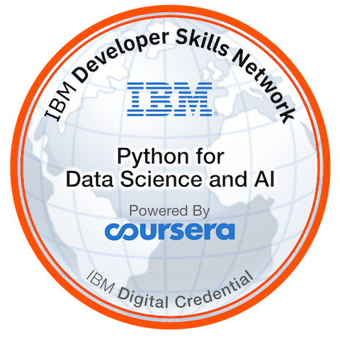

Rutuja Kawade
Software Engineer | AI Systems | Cloud Infrastructure
Hi, I'm Rutuja. I hold a Master's in Computer Science from Georgia Tech, specializing in Computing Systems and Machine Learning. I have three years of industry experience as a Software Development Engineer II at Rakuten Symphony, where I built scalable Kubernetes-native platforms. Currently, I'm at Kroger Technology & Digital working on intelligent ops automation.
Education
Georgia Institute of Technology
2024 - 2026MS in Computer Science
Specialization: Computing Systems & Machine Learning • Graduate Teaching Assistant
GPA: 3.7/4.0
Pune Institute of Computer Technology
2018 - 2022B.E. in Computer Engineering (Hons. in Data Science)
GPA: 9.3/10.0
Experience
Kroger Technology & Digital (via IBM)
June 2026 – PresentSoftware Development Engineer
- Building KOAP, an AI-powered enterprise ops agent platform that automates data pipeline failure detection, root cause analysis, and incident routing.
- Integrated with ServiceNow, Microsoft Teams, and Kroger's internal LLM gateway (KrAIG) using Python, CrewAI multi-agent orchestration, FastAPI, PostgreSQL, and FAISS.
- Developing Talent Compass, an enterprise workforce planning platform using LLM-assisted recommendations to analyze cost impact across 30,000+ employees.
Rakuten Cloud (Robin.io)
July 2022 – July 2025Software Engineer II
- Worked on private cloud infrastructure and delivered Cloud Native Storage (CNS) to Google Marketplace with optimized installer and operator code used across 40,000+ installations.
- Developed quorum-based replication for PostgreSQL, migrating from master-slave to leaderless architecture to improve fault tolerance and write availability.
- Enhanced planner with asyncio parallelization and Python GIL optimizations, enabling 200% increase in cluster capacity.
Microsoft
Oct 2021 – Dec 2021Project Contributor
- Built Kaksha, a scalable web platform for remote learning during the pandemic as part of Microsoft's Engage program.
Avaya Inc
June 2021 – Sep 2021Software Development Intern
- Developed REST API services for Communication Manager in Spring Boot (Java).
Projects
KOAP & Talent Compass
AI-powered enterprise ops automation platform and workforce planning system built for Kroger using LLM-assisted recommendations.
Smart Tutor - MoE LLM
Agentic Q&A assistant using a Mixture-of-Experts architecture routing queries to LoRA fine-tuned expert models with 98% accuracy.
FileSync - Distributed System
Low-latency distributed file synchronization system with bidirectional streaming RPCs, incremental updates, and anti-entropy repair.
gRPC Key-value Store
High-performance microservice communication framework using gRPC and Protocol Buffers with bidirectional streaming for real-time data.
Achievements & Certifications
.png)
Stanford ML

AWS Machine Learning

IBM Python Data Science